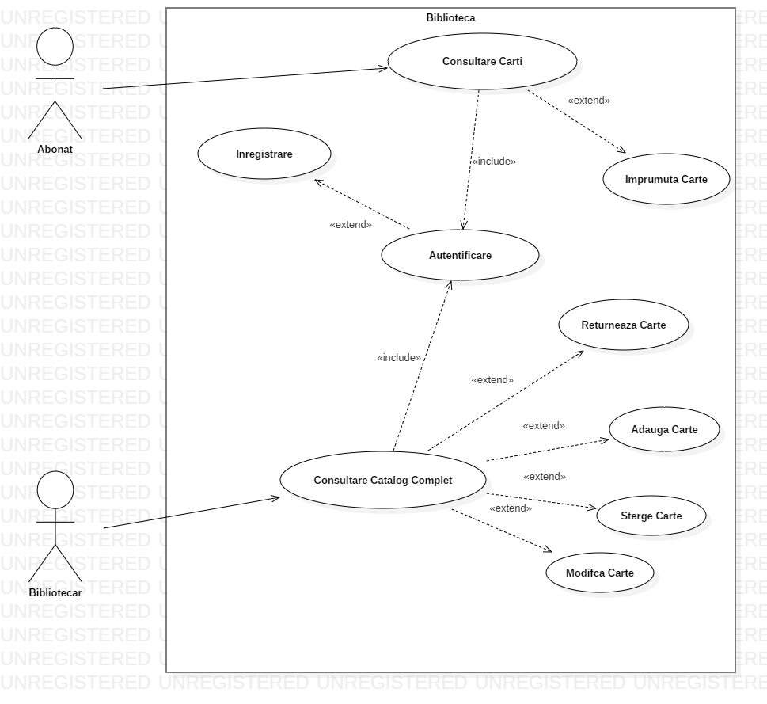
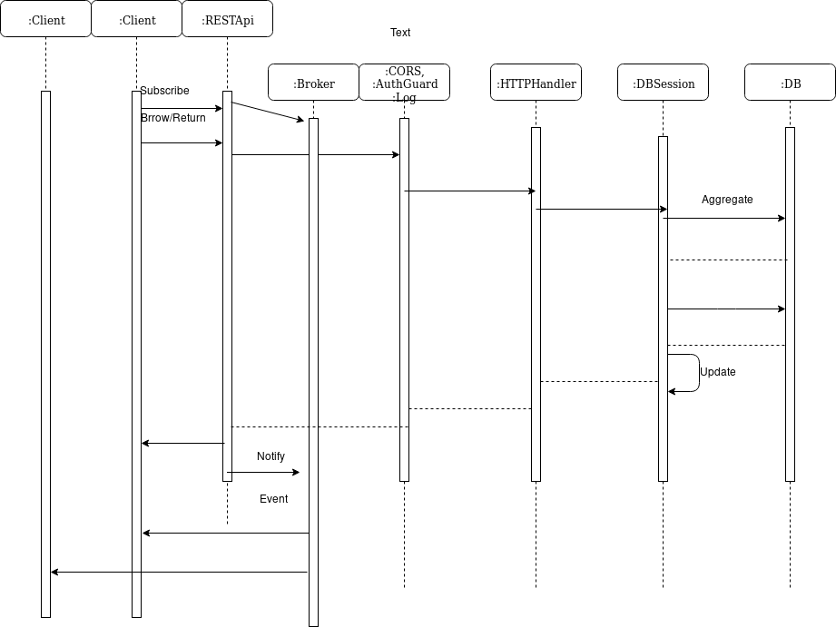
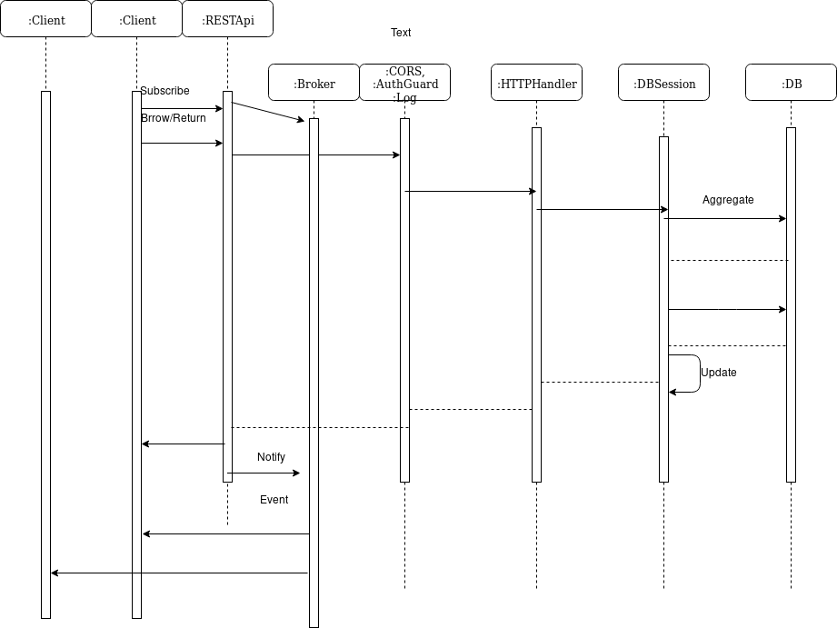

Documentatie Biblioteca
Pinta Titus
Cazuri de Utilizare

Nume: Autentificare
Actor: Abonat sau Bibliotecar
Flux: 1) Utilizatorul introduce datele si apasa butonul de autentificare
2) Sistemul verifica datele
3 a) In cazul in care datele sunt corecte redirectioneaza utilizatorul
3 b) In caul in care sunt gresite sistemul anunta greseala
Nume: Inregistrare
Actor: Abonat
Flux: 1) Utilizatorul introduce datele si apasa butonul de inregistrare
2) Sistemul verifica datele
3 a) In cazul in care datele sunt corecte redirectioneaza utilizatorul
3 b) In caul in care sunt gresite sistemul anunta greseala
Nume: Consultare carti
Actor: Abonat
Flux: 1) Abonatul derileaza lista de carti
Scenariu de Exceptie: -
Preconditii: Autentificare
Nume: Imprumuta Carte
Actor: Abonat
Flux: 1) Utlizatorul alege cartea
2) Utilizatorul apasa butonul de imprumut in cazul in care cartea este disponibila
3) Sistemul marcheaza cartea ca imprumutata
Preconditii: Consultare Carti
Nume: Consultare carti
Actor: Bibliotecarul
Flux: 1) Bibliotecarul derileaza lista de carti
Scenariu de Exceptie: -
Preconditii: Autentificare
Nume: Returneaza Carte
Actor: Bibliotecar
Flux: 1) Utlizatorul alege cartea
2) Utilizatorul introduce numele abonatului care a imprumutat cartea
3) Utilizatorul apasa butonul de returnare
4 a) Sistemul marcheaza cartea ca returnata in cazul in care utilizatorul a imprumutat cartea
4 b) In caz contrar sistemul semnaleaza eroarea
Preconditii: Consultare Carti
Nume: Adauga Carte
Actor: Bibliotecar
Flux:1) Utilizatorul introduce datele
3) Utilizatorul apasa butonul de adaugare
4 a) Sistemul introduce datele in cazul in care datele sunt valide
4 b) In caz contrar sistemul semnaleaza eroarea
Preconditii: Consultare Carti
Nume: Modifica Carte
Actor: Bibliotecar
Flux: 1) Utlizatorul alege cartea
2) Utilizatorul introduce datele noi
3) Utilizatorul apasa butonul de modificare
4 a) Sistemul modifica datele in cazul in care datele sunt valide
4 b) In caz contrar sistemul semnaleaza eroarea
Preconditii: Consultare Carti
Nume: Sterge Carte
Actor: Bibliotecar
Flux: 1) Utlizatorul alege cartea
2) Utilizatorul apasa butonul de stergere
3) Sistemul sterge cartea
Preconditii: Consultare Carti
Diagrama de Clase extinsa

Diagrame de secventa
 

Tehnologii Utiliate
- Limbajul de progrmare GO (golang) pentru tot ce tine de backend
- Gorutine (CSP) pentru concurenta, gestiunea simultana a mai multor clienti
- Pachetul standard http din go
- Routerul MUX pentru rutarea traficului spre HTTPServe functions
- PotgreSQL baza de date relationala
- xorm orm pentru GO
- JWT pentru qutentificare si autorizare
- HMAC cu secret comun pentru semnatura digitala
- SSE pentru comunicarea de la server la client, implementare cu corutine si canale
- Vanilla JS pt frontend
- Web Components
- Extensii reactive de javascript pt Observer
- CSS grid pt layout
- CSS media query
- Vim
- Postman
Cum Se ruleaza
Aplicatia are nevoie de Postgre sql golang si un server static
O clona a bazei de date s e afla in fisierul db.pgsql
Rulati postgre
Pentru a rula partea de backend navigati in directorul iss/go/src/api
Go ar trebui setat sa caute codul sursa in acest fisier
expor GOPATH="current_dir/iss/go"
comanda pt a rula: go run *.go
Pentru a rula front endul eu am folosit npm static serve.
Pentru aceasta aveti nevoie de Node.js
Navigati in folderul frontend
npm insall
static-serve -p 8000 .